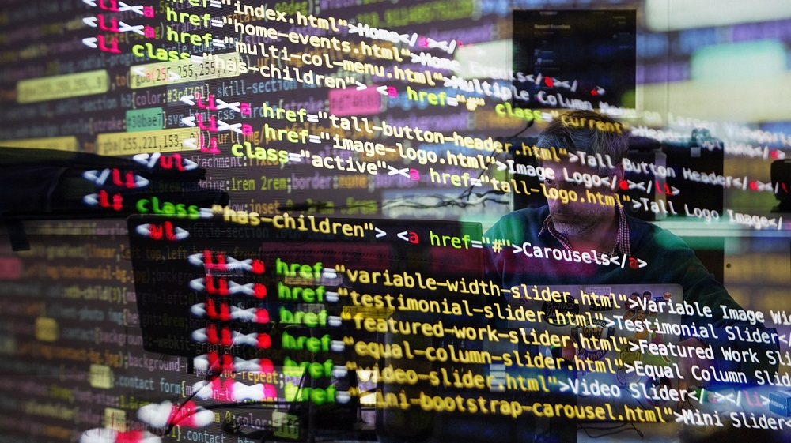
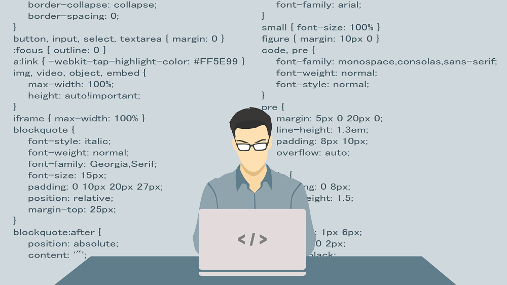

Work smarter, not harder! DigitalRevival will help you out!
Viziuna noastră
Munca și exercițiul sunt cele care ne-au ajutat să deprindem aptitudinile cu care ne mândrim astăzi, iar tot efortul depus până acum a fost pentru voi. Pentru a vă putea ajuta să întelegeți și rezolva problemele sigur și eficient, a vă simplifica viața economisind resurse și timp.
Misiunea noastră
Ne dorim să fim cei la care puteți apela în situații de criză, cei care vă vor oferi sfatul de care aveți nevoie și care va vor asigura ca există un mod de a rezolva o problema aparent irezolvabilă. Ni suntem oamenii de încredere care își vor dedica timpul doneavoastră!
De ce să ne alegeți pe noi?
Suntem o echipă tânără, dinamică, dedicată și strând unită, formată înainte de începuturile companiei cu scopul de a vă putea oferi cele mai rapide și eficiente servicii personalizate.
Vom avea grijă ca dumneavoastră să aveți parte de cele mai performante servicii IT, astfel încât operațiunile dumneavoastră se se desfășoare eficient, oferindu-vă soluții scalabile și de lungă durată. Pe parcursul acestor ani de muncă și dezvoltare atât în echipă, cât și personală, ne-am extins portofoliul conform pieței muncii, a inovațiilor tehnologice, a cerințelor companiilor și a utilizatorilor din actualitate.
În cadrul companiei noastre puteți benefcia de servicii de înaltă performanță. DigitalRevival este o companie din Cluj-Napoca specializată în servicii complete de suport IT și soluții în ceea ce priveste infrastructura IT securizate. Înființată în 2018, încă proaspătă pe piața muncii, în acești patru ani a obținut rezultate uimitoare în ceea ce privește domeniul de Cybersecurity, de Network Managmenet și de Server Management, datorită echipei profesionale și bine antrenate în ceea ce privește defecțiunile IT.
Cele patru mari componente esențile ale afacerii noastre, respectiv serviciile de Software antivirus, instalare, actualizare și monitorizare a acestora, cele de Network design, cele de Soluții Cloud si Back-up date dar și cele de Servicii de recuperare a datelor sunt operate de angajați speciali antrenați și informați în astfel de situații pentru ca rezultatul întregii operațiuni să fie de succes, cu cea mai mică rată de daune și satisfacție garantată.
În cadrul companiei noastre puteți benefcia de servicii de înaltă performanță!
Software antivirus, instalare, actualizare și monitorizare
Antivirusul reprezintă un pachet de programe ce are rol în detectrea, eliminarea și protecția împotriva unor respective atacuri cibernetice, respectiv a virusilor. Cel mai eficient mod de a apăra un computer este acela de a instala un software antivirus, acestea fiind esențiale pentru funcționarea corectă a unui computer. Colaborând împreună, vom descoperi tot ceea ce trebuie protejat și vom avea grijă să rămână atsfel pe o perioadă îndelungată. Vom asigura atât instalarea, actualizarea antivirusului pentru a performa eficient la cele mai noi versiuni ale sale, cât si monitorizarea acestuia în timpul utilizării.
Last updated 3 months ago
Rezultate în doar 24 de ore!
Network design
În primul rând, ce înseamnă Network design? Acesta reprezintă modul în care sunt evaluate în întregime părțile unei rețea, astfel încat acestea să interacționeze între el în cel mai eficace mod posibil. Rețeaua așazisă trebuie să ajungă suficient de dezvoltată pentru a putea combate viitoare probleme de securitate. DigitalRevival sunt cei ce se vor ocupa de implementarea eficientă a infrastructurii de rețea, astfel încât rețeaua să funcționeze la randament maxim, asigurând securitatea rețelei.
Last updated 3 months ago
Rezultate în doar 48 de ore!

Soluții Cloud si Back-up date
Cloud reprezintă un serviciu indispensabil care se află în centre de stocare a datelor, ce reprezintă interconectarea serverelor, a software-ului și a bazelor de date. DigitalRevival oferă cele mai bune, sigure și eficiente servicii în materie de stocare, de Cloud si de Back-up, astfel încât se pot realiza copii ale serverelor de date și a datelor stocate pe acestea care pot fi accesate de pe orice dispozitiv și administrate direct prin intermediul Internetului.
Last updated 3 months ago
Rezultate în doar 7 zile lucrătoare!
Servicii de recuperare a datelor
Datele personale pot fi ușor pierdute datorită unor eventuale defecțiuni ce intră în cadrul Hardware-ului, partea fizică a unui computer ce se ocupă cu prelucrarea, stocarea și redarea informațiilor, respectiv pune în execuție programele Software, partea logică a unui computer. Ne vom asigura ca datele dumneavoastră vor fi recuperate rapid și sigur, în cel mai scurt timp posibil prin diagnosticarea gradului de defectare al echipamentului, ce va determina posibilitatea recuperării parțiale sau totale a datelor.
Last updated 3 months ago
Rezultate în doar 48 de ore!

Echipa noastră
Suntem o echipă formată din 20 de angajați tineri și bine informați în domeniul IT, pregătiți cu răspunsuri pentru noile porovocări în ceea ce privește această industrie, cu planuri inovatoare pentru dezvoltarea atât a sistemelor de management cât și a securității cibernetice, sunt totodată și care au avut experiență de muncă în cadrul marilor companii ale lumii. Acum vă suntem la îndemână pentru orice neclaritate care vă iese în cale.
Când vine vorba despre viziunea noastră, munca și exercițiul sunt cele care ne-au ajutat să deprindem aptitudinile cu care ne mândrim astăzi, iar tot efortul depus până acum a fost pentru voi. Pentru a vă putea ajuta să întelegeți și rezolva problemele sigur și eficient, a vă simplifica viața economisind resurse și timp. Iar ceea ce numim misiune este faptul că ne dorim să fim cei la care puteți apela în situații de criză, cei care vă vor oferi sfatul de care aveți nevoie și care va vor asigura ca există un mod de a rezolva o problema aparent irezolvabilă. Ni suntem oamenii de încredere care își vor dedica timpul doneavoastră!
Membrii fondatori ai DigitalRevival
Înființată în 2018, încă proaspătă pe piața muncii, în acești patru ani a obținut rezultate uimitoare în ceea ce privește domeniul de Cybersecurity, de Network Managmenet și de Server Management, datorită echipei profesionale bine antrenate în defecțiuni IT.
Datorită pasiunii pe care o purtăm lumii cibernetice, fiecare angajat a fost nevoit să aibă un portofoliu dens, o dorință arzătoare de a oferi ajutor pe deplin căci astfel am putea dărui servicii de cea mai bună calitate timp de 4 ani de zile. În acești ani ne-am făcut remarcați pe plan internațional prin produsele pe care le oferim, concepute și testate de către noi de la zero, dar și prin rezultatele fascinante și reușitele în ceea ce privește securitatea cibernetică.
Cu toate că suntem pe piața muncii de doar 4 ani, între angajații actuali există o puternică legătură de prietenie, atât cu cei aflați în țară, cât și cu cei din străinătate, respectiv Anglia, Germania și Spania, oameni dragi, adevărați specialiști în ceea ce privește informatica. Ei sunt cei care ne ajută de departe.

Shaun Tiberiu
Software engineer din 2014, Team leader și Company Founder începând cu anul 2020.
„Sunt încrezător în puterile noastre pentru că am întemeiat aceasta firma împreună, punând la punct fiecare detaliu astfel încât să iasă un proiect cât mai reușit. Consider că ne-am dezvoltat fiecare suficient de mult încât să putem efectua servicii profesionale de cea mai bună calitate.”

Gloria Câmpean
Computer Network Architect din 2016 și Company Founder.
„Ne-am cunoscut în urma cu 6 ani. Având similaritatea terminării facultății de informatică, a fost mai ușor să ne ajutăm unii pe ceilalți și să învățăm împreună cum să lucrăm eficient. Frumosul il reprezintă fiecare dintre noi pentru că reusita finală este rezultatul muncii întregului grup.Am muncit împreună cot la cot pentru a dezvolta această afacere în acești ani și îndrăgesc fiecare moment alaturi colegii mei.”

Daniela Denis
Computer Hardware engineer din 2016 și Company Founder.
„Alături de ei am învățat bazele programarii. Am dat dovadă de perseverență prin munca de echipă din numeroasele proiecte la care am luat parte și pot spune cu mâna pe inimă că nu veți rămâne dezamăgiți de serviciile pe care vi le vom oferi!”

Vladislav Duncan
Software engineer din 2014 și Company Founder.
„Consider că tehnologia a devenit un aspect indispensabil al actualității și nevoia de oameni, firme, companii și servicii care să se ocupe cu informarea corectă referitoare la programe și al întregului sistem iformatic este de nelipsit. Acum ca niciodată sunt pregătit să ajut lumea cu toată informația acumulată pe parcursul acestor ani.”
Va fi plăcerea noastră să vă fim de ajutor!
Suntem aici să găsim soluții la acele probleme care par a fi de nerezolvat, să vă ajutăm să înțelegeți sursa problemei, dar și de a găsi cea mai eficientă metodă de rezolvare împreună!
-din partea echiei DigitalRevival.